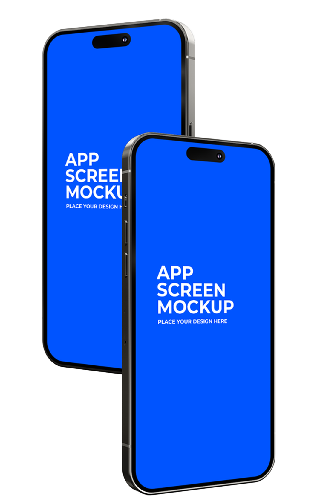
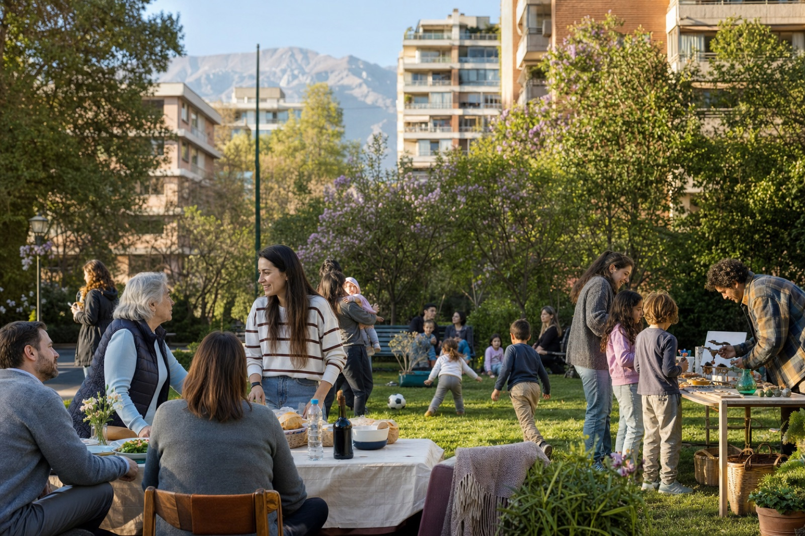

Una verdad incómoda
Vivimos a pocos metros. Pero a veces, a mundos de distancia.
Nos cruzamos cada día sin conocernos. Pedimos ayuda lejos. Compramos lejos. Nos enteramos tarde de lo que pasó al lado de casa.
 El Barrio
Quiero ser parte ↗
El Barrio
Quiero ser parte ↗
El Barrio · Comenzamos en Las Condes
La red local que transforma personas cercanas en vecinos, negocios desconocidos en favoritos y calles compartidas en comunidad.
Personas reales. Lugares reales.
Todo conectado por vivir cerca.

Una verdad incómoda
Nos cruzamos cada día sin conocernos. Pedimos ayuda lejos. Compramos lejos. Nos enteramos tarde de lo que pasó al lado de casa.
Todo comienza con algo pequeño
No necesita hacerse viral. Solo necesita llegar a la persona correcta, en el lugar correcto, cuando todavía importa.
Entonces ocurre algo
La distancia se acorta. Aparece la confianza. Una necesidad cotidiana crea una conexión que antes no existía.
Eso es El Barrio
Personas, comercios, servicios y experiencias que ya estaban ahí. Ahora, conectadas por el lugar que comparten.
Una historia que podría pasar mañana
Marta vive hace doce años en el barrio. Conoce su edificio, su almacén y la plaza. Pero todavía hay muchas personas y soluciones cercanas que no sabe que existen.


La pregunta
Publica lo que necesita en su barrio. Sin grupos eternos, sin preguntar en cinco lugares distintos y sin sentirse sola frente al problema.
“¿Alguien conoce a alguien de confianza que esté cerca?”
La respuesta
No aparece porque pagó por estar primero. Aparece porque está cerca, otros vecinos lo recomiendan y puede ayudar hoy.
La confianza deja de ser un comentario perdido. Se vuelve una red.
El encuentro
El comercio gana una clienta del sector. Marta encuentra un lugar al que quiere volver. El dinero circula cerca y el barrio empieza a reconocerse.
No se trata de llegar a más personas. Se trata de llegar a las correctas.
La comunidad
Ya no son un perfil y un servicio. Son dos personas del mismo lugar, compartiendo un evento que antes quizás ninguno habría visto.
Eso es El Barrio: hacer visible la comunidad que ya existe.


 ✦ Destacado
✦ Destacado
✓ Comercio verificado
“El pan siempre está fresco y ya conocen mi pedido. Se siente realmente del barrio.”
Para comercios locales
El problema no es que el barrio no necesite lo que haces. Es que muchas veces todavía no sabe que existes.
Tu ficha muestra lo importante: qué haces, dónde estás, cuándo abres y cómo contactarte. Sin ruido y frente a quienes realmente pueden visitarte.
Productos, beneficios y opiniones de vecinos transforman curiosidad en una primera visita, y una primera visita en una relación que puede durar años.
Destácate cuando necesites mayor visibilidad y construye una comunidad de clientes que viven, caminan y compran cerca.
Quiero sumar mi comercio →Para profesionales del barrio
No necesitas llegar a toda la ciudad. Necesitas aparecer frente a quienes buscan exactamente lo que sabes hacer.
Especialidad, disponibilidad, cobertura y contacto viven en un perfil profesional claro.
Las opiniones de vecinos permanecen y construyen una reputación visible dentro del barrio.
Destaca tu servicio para recibir más oportunidades dentro de tu zona de trabajo.
Quiero publicar mi servicio →



 Pedro4,9 ★
Pedro4,9 ★ Mario4,8 ★
Mario4,8 ★ Ana4,9 ★
Ana4,9 ★✓ Perfil verificado
Reparaciones e instalaciones a domicilio. Atención dentro del barrio.
“Llegó rápido, explicó todo y dejó la reparación impecable.”
Recomendado por Carolina“Puntual, amable y transparente con el valor.”
Únete a los primeros vecinosTe avisaremos antes del lanzamiento público.
Estamos construyendo la primera comunidad en Las Condes. Déjanos tus datos para ser de los primeros.